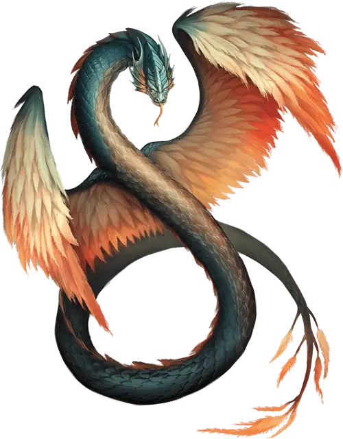

Коатль
Couatl
Средний Небожитель, законно-добрый

Класс Доспеха 19 (природный доспех)
Хиты 97 (13к8 + 39)
Скорость 30 футов, летая 90 футов
| мод | спас | ||
|---|---|---|---|
| СИЛ | 16 | +3 | +3 |
| ЛОВ | 20 | +5 | +5 |
| ТЕЛ | 17 | +3 | +5 |
| мод | спас | ||
|---|---|---|---|
| ИНТ | 18 | +4 | +4 |
| МДР | 20 | +5 | +7 |
| ХАР | 18 | +4 | +6 |
Сопротивление урону излучение
Иммунитет к урону психическая энергия; дробящий, колющий, рубящий от немагических атак
Чувства истинное зрение 120 футов, пассивное Восприятие 15
Языки Все, Телепатия 120 фт.
Опасность 4 (1100 опыта)
Бонус мастерства +2
Среда обитания Город, Лес, Луг, Пустыня
Особенности
Врождённое колдовство. Базовой характеристикой коатля является Харизма (Сл спасброска от заклинания 14). Он может накладывать следующие заклинания, нуждаясь только в вербальных компонентах:
• Неограниченно: обнаружение зла и добра [detect evil and good], обнаружение магии [detect magic], обнаружение мыслей [detect thoughts];
• 3/день каждое: благословение [bless], защита от яда [protection from poison], лечение ран [cure wounds], малое восстановление [lesser restoration], сотворение пищи и воды [create food and water], убежище [sanctuary], щит [shield];
• 1/день каждое: вещий сон [dream], высшее восстановление [greater restoration], наблюдение [scrying].
Магическое оружие. Атаки оружием коатля являются магическими.
Защищенное сознание. Коатль обладает иммунитетом к удаленному наблюдению, а также ко всем эффектам, чувствующим его эмоции, читающим его мысли и обнаруживающим его местонахождение.
Действия
Укус. Рукопашная атака оружием: +8 к попаданию, досягаемость 5 футов, одно существо. Попадание: Колющий урон 8 (1к6 + 5), и цель должна преуспеть в спасброске Телосложения Сл 13, иначе станет отравленной на 24 часа. Пока цель отравлена, она лишена сознания. Другое существо может действием привести цель в чувство.
Сжимание. Рукопашная атака оружием: +6 к попаданию, досягаемость 10 футов, одно существо с размером не больше Среднего. Попадание: Дробящий урон 10 (2к6 + 3), и цель становится схваченной (Сл высвобождения равна 15). Пока цель схвачена, она опутана, а коатль не может сжимать другую цель.
Смена формы. Коатль магическим образом превращается в гуманоида или зверя, чей показатель опасности не превышает его собственный, или принимает свой истинный облик. Он принимает свой истинный облик, если умирает. Все снаряжение, которое он несет или носит, сливается с новым обликом или используется им (на выбор коатля).
В новом облике коатль сохраняет свою игровую статистику и способность говорить, но КД, режимы перемещения, Сила, Ловкость и остальные действия заменяются теми, что есть у нового облика, и он получает все элементы статистики и умения (кроме классовых умений, легендарных действий и действий логова), которые есть у нового облика, но отсутствуют у него. Если у нового облика есть атака укусом, коатль может использовать в этом облике свой укус.
Описание
Коатль — доброжелательное змееподобное существо большого интеллекта и проницательности. Их ярко раскрашенные крылья и вежливые манеры говорят о небесном происхождении.
Божественные посланники. Коатли были созданы как стражи и посланники добрыми божествами древности, которым уже давно не поклоняются, и которые уже давно забыты всеми, кроме самих коатлей. Большинство божественных поручений, выданных коатлям, уже давно либо выполнены, либо провалены. Тем не менее, некоторые коатли по-прежнему наблюдают за древними силами, ожидают исполнения пророчеств, либо охраняют наследников существ, которых они когда-то охраняли и направляли. Вне зависимости от задания, коатли предпочитают не показываться, и раскрывают себя только если нет другого выхода.
Правдолюб. Коатль не может лгать, но может умалчивать информацию, отвечать туманно или позволять собеседнику прийти к неверным выводам, если это необходимо, чтоб защитить что-то, сдержать обещание или скрыть тайну своего существования.
Древние и немногочисленные. Коатли могут жить очень долго, обходясь без пищи, и даже без воздуха, но они могут умереть от болезни или старости. Коатль может предчувствовать свою смерть более чем за сто лет, но не может предвидеть, каким именно образом он умрет.
Если коатль уже достиг поставленной перед ним задачи, он принимает свою судьбу. Но если неминуемая смерть ставит под угрозу достижение целей, он начинает активно искать другого коатля, чтобы произвести потомство.
Брачные ритуалы коатлей представляют собой прекрасные и замысловатые танцы магии и света, в результате которых появляется яйцо, похожее на драгоценный камень, из которого потом вылупляется новый коатль. Родитель, который искал пару, растит новорожденного коатля и рассказывает ему его обязанности, чтобы тот мог завершить задачу, которую его родитель оставит незаконченной.